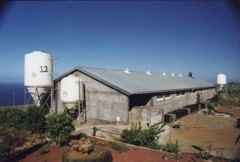

|
Echos
Economic behaviour analysis of the "Stockbreeding wastewater system" actors at the Reunion IslandStefano Farolfi, Pierre Bommel, Christophe Le Page (Cirad)  Some municipalities in the high lands of the Reunion Island are characterised by an intensive stockbreeding production. The pollution problems provoked by this type of activity is faced by the policymakers, who have to choose a set of environmental measures adapted to the local context. In order to protect natural resources, several rules have been defined concerning the spreading practices of stockbreeding wastewater. Within a legal context dynamic and progressively restrictive, the stockbreeder are faced to a system of standards and, probably soon, of economic instruments (taxes, subsidies, etc.) which will induce new wastewater management choices. We have studied the economic behaviour of Grand Ilets stockbreeders. This is a zone where the spreadable surfaces are not sufficient. In the same area of the island, the coastal zone (St-André) is dominated by sugarcane farms, who are strong consumers of organic matter.The objective of this model is to simulate different wastewater management scenarios at Grand Ilet following different lines of environmental policy. We can so test how the adoption of the mentioned economic and command-control tools can induce different reactions. In the specific case of this study, two wastewater management alternatives are compared:
Following a provisional calculation of the two strategies costs, the stockbreeder chooses every year which one to adopt the following year. The model is therefore able to simulate producers-polluters behaviour, and builds up scenarios which show at the same time economic (individual and social costs) and ecological (nitrogen pollution) dynamics. The four tested scenarios are based on the choice of environmental policy tools and on different sugarcane surface availability:
The figures above show the final state of the environment after 10 years. The maps left side corresponds to Grand Ilets stockbreeding farms, and the right side corresponds to the sugarcane farms of the coastal area.
For further information, contact the author. ReferencesFarolfi, S., Le Page, C., Tidball, M. and Bommel, P. (2001). Gestion des effluents délevage à lîle de La Réunion: analyse du comportement économique des acteurs selon une approche standard et par un système multi-agent. Séminaire de recherche "Préservation et valorisation de leau dans le domaine littoral", St-Denis de la Réunion, 15 juin 2001. http://www.cirad.fr/presentation/programmes/espace/effluent/effluent.shtml |